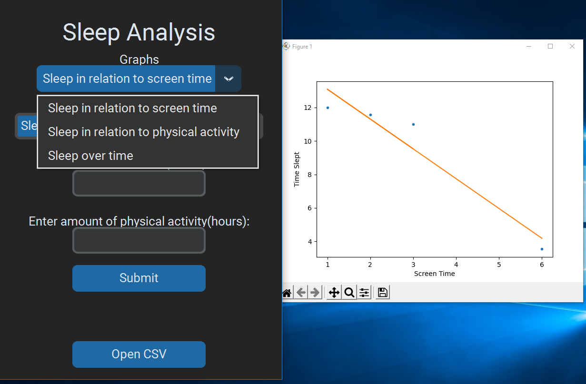
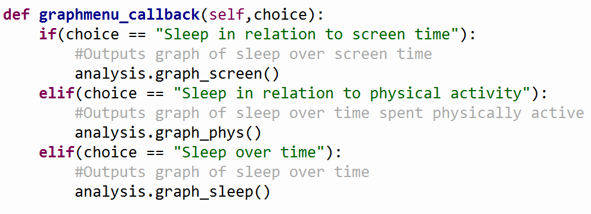

Timeline

Progress Log
Week 1:
- Brainstormed ideas for the project
- Created a project timeline
- Began work on the Investigation
Week 2:
- Decided on a project idea
- Finished the Investigation
- Began on the design section
Week 3:
- Created the flowchart
- Began to plan the design of the different sections of the artefact.
- Created a mock up of a menu in the python program
- Chose some useful data science libraries to use in the python program
Week 4&5:
- These weeks were Christmas break so no work could be done on the coursework.
Week 6:
- Began work on the prorgramming of the artefact
- Outlined the basic micro-bit code
- Began on the python program
- Implemented graph of sleep time in relation to screen time in the python program using matplotlib
- Implemented graph of sleep time in related physical activity
Week 7:
- Implemented the "what if questions" into the python program using sci-kit learn
- As I was ahead of schedule I began on a Graphical User Interface for the python program using customtkinter
- Added graph of sleep over time
Week 8:
- Implemented button to import csv file into the program in the GUI
- Implemented screen in the GUI which would warn the user if no data has been imported yet
Week 9-11:
- During weeks 9 and 10 we sat our mock examinations so no work was carried out
- Week 11 was during our midterm break so no work on the project was carried out
Week 12:
- Final touches on the artefact
- Began on unit testing
- Began on the evaluate section
Week 13:
- Finished the code for the artefact
- Finished unit testing
- Completed Evaluation
- Began on Meeting the Brief section
Week 14:
- Recorded video
- Finalized project
Development of the Artefact
This artefact was created using the BBC Microbit to take in and record data and then python was used to process the data and make predictions based on it.
- I first started by creating a Microbit program which would log data and output it to a csv file on a PC. I did this by using the Data Logger extension on the BBC Microbit.
- I used this extension to log three pieces of data: the amount of physical activity during a day, the amount of screen time during the day and the time slept that day.
- The program would log when the user went to sleep and when they woke up and through that find the time slept that night.
- The program would also warn the user of excessive screen time and of not enough physical activity as well as congratulating them on moderate screen time and greater physical activity.
- Then I began on the python program to read in and analyze this data.
- I used the csv library to read in the data.
- I began to create the different functions to analyze and make predictions on the data.
- I used matplotlib and numpy to output useful graphs of the data.
- Example:
- I used sci-kit learn to make predictions based on the data.
- The function would take in the value of one of the pieces of data and make a prediction of the value of another piece of data based on it.
- Example:
- This function takes in a value of screen time and time spent physically active in a day and then attempts to predict the time slept that night.
- I then created a basic menu system in the console:
- At this point in the development of the artefact I was behind schedule and so had time to spare, therefore I decided to try and implement a Graphical User Interface.
- To do this I used a third party python library called customtkinter.
- After setting the colour scheme and creating the basic frame I created a dropdown menu which allowed the user to select different graphs of the data.  
- I then implemented the predictive element into the GUI:
- The user can select which value they want to predict and then enter the corresponding values to predict based on, the interface then outputs the predicted result below.
- I also implemented a button which would open a file dialog, allowing the user to open a csv file with the data they wish to read in.
- This file dialog was implemented using customtkinter.
- Finally, I then implemented a screen which would appear in the GUI if no data had been read in and prompt the user to select the data to read in.
Microbit
Analyis Program
Graphical User Interface
Testing